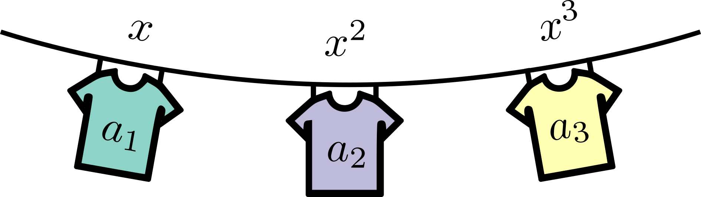

Probability generating functions#
In this tutorial, we are interested in discrete and non-negative random variables taking values \(n \in \lbrace 0, 1, \dots \rbrace\). Such random variables are omnipresent in science whenever we are counting things that are the result of (or can be modeled as) a stochastic process. Population dynamics, genetic evolution, and epidemiology are only a few of the many application for non-negative discrete random variables (see birth–death process and branching process for instance).
A random variable is completly described by its probability distribution \((p_n)_{n = 0}^\infty\), but sometimes it is more convenient to work with another representation—here, we will use its probability generating function (PGF)
Simple polynomials whose coefficients are all positive since they correspond to probabilities and whose value \(G(1)=1\) since the probabilities are normalized. Probability generating functions encode the distribution into a function, attaching each number \(p_n\) to a monomial \(x^n\), or in the words of Herbert S. Wilf, “A generating function is a clothesline on which we hang up a sequence of numbers for display.” [Wilf, 2005].

For the more computationally minded readers, it might be easier to think of PGFs as mathematical data structure. In a code, you would likely hold the discrete distribution \(p_n\) of outcomes \(n\) in something like an array or a dictionary with keys \(\lbrace n\rbrace\) and values \(\lbrace p_n\rbrace\). Mathematically, we can do the same thing by using the coefficients of a polynomial! The powers of \(x\) are simply counting variables corresponding to the indices of our list or the keys of our dictionary, and the coefficients can then be used to store the values. It’s clever, but is it useful?
As we show in the next chapter, it is straightforward to recover the probability distribution from its PGF. So it is a proper data structure. But why work with the latter? Mainly because for certain applications, it is possible to find an analytical expression for the PGF, or define an algorithm solving it, while it is much more complicated (or impossible) to have an explicit formula (or an algorithm) for the probability distribution directly.
A simple example: Rolling dice#
Throughout this first part of the book, we will often use this simple example—rolling a certain number of four- or six-sided dice, then try to estimate the probability of some event. With a single six-sided die for instance, the possible outcomes are quite simple: \(n \in \lbrace 1, 2, 3, 4, 5, 6 \rbrace\), all with equal probability \(p_n = 1/6\). The corresponding PGF is simply
Even simpler, a single four-sided die has only four possible outcomes: \(n \in \lbrace 1, 2, 3, 4 \rbrace\), all with equal probability \(p_n = 1/4\). The PGF is now
But now what happens when we use more than one die? To answer these questions, let us highlight some important properties of PGFs.
Sum of independent random variables#
Imagine a game of craps where you have to bet on the summed roll of a six- and a four-sided dice. The result will be anywhere from 2 to 10. But what are the probabilities associated with all values? Mathematically, we can expliclty calculate all possible combinations and their probabilities.
So really, this approach is simply multiplying the PGFs! And this holds true in general. If we have two independent random variables, \(n_1\) and \(n_2\), with PGF \(G_1(x)\) and \(G_2(x)\). Then, the probability generating function for their sum \(n = n_1 + n_2\) is
where on the second line, we use the fact that the joint probability distribution for two independent random variables is just the product of their respective probability distribution. Hence we see that summing independent random variables results in multiplying their PGF. In general, for the sum of \(m\) independent random variables.
A variable number of random variables#
Imagine a weirder game of craps where you first roll the six-sided die, then roll and sum the results of a number of four-sided dice corresponding to the number obtained on the six-sided die. How can you quickly predict the possible outcomes? With probability \(1/6\), you get a 1 and roll a single four-sided die whose outcome is generated by \(g_4(x)\) defined above. With probability \(1/6\), you get a 2 and are therefore summing up the results of two four-sided dice, which we just said should be generated by \(g_4(x)^2\). And so on… So this weird game is really generating outcomes from a combination of known PGFs.
In truth, we are simply building on the previous property. Generally, let us assume that \(G_j(x) \equiv F(x)\) for all \(j\), i.e., \(n\) is the sum of \(m\) independent and identically distributed random variables. Let us also assume that \(m\) is now a random variable as well, with PGF \(H(x)\). Then
Therefore, the PGF for the sum of a variable number of i.i.d random variable is simply done by taking the composition of PGFs.
Looking ahead#
From these two properties alone, we can already imagine cases where PGFs can be useful. Imagine a ridiculous game of craps where you roll a six-sided die and a four-sided die, sum the outcomes, and roll a corresponding number of six-sided dice. This can quickly become annoying to calculate by hand or even code up! But with PGFs, things stay relatively simple. The sum of the outcomes will be generated by